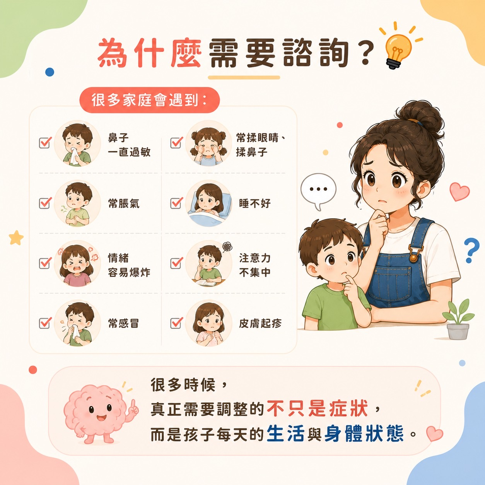
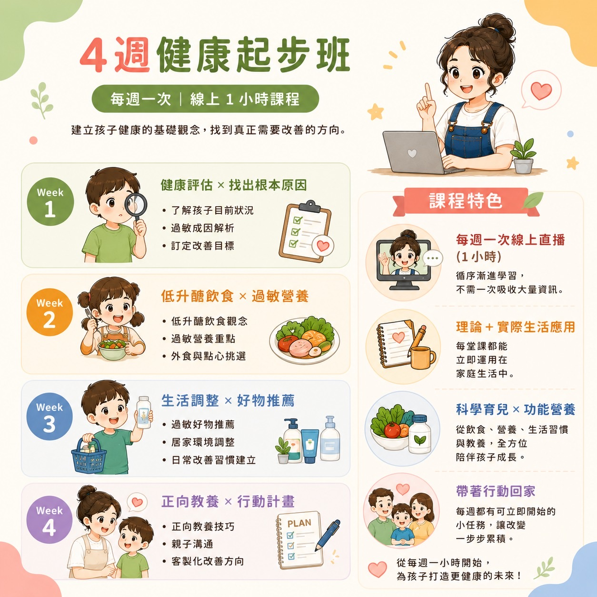
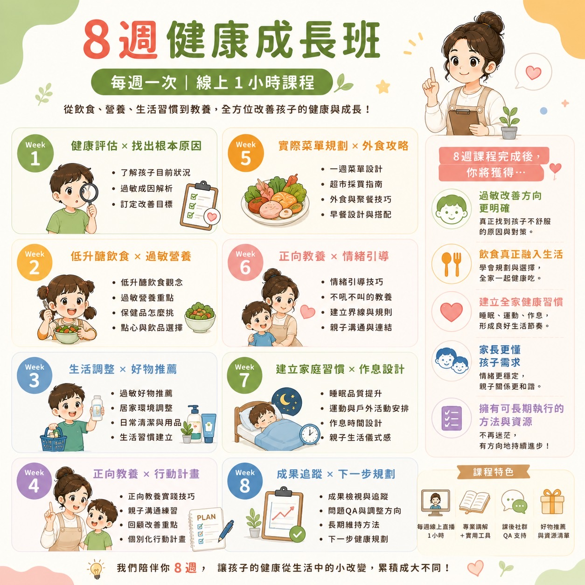
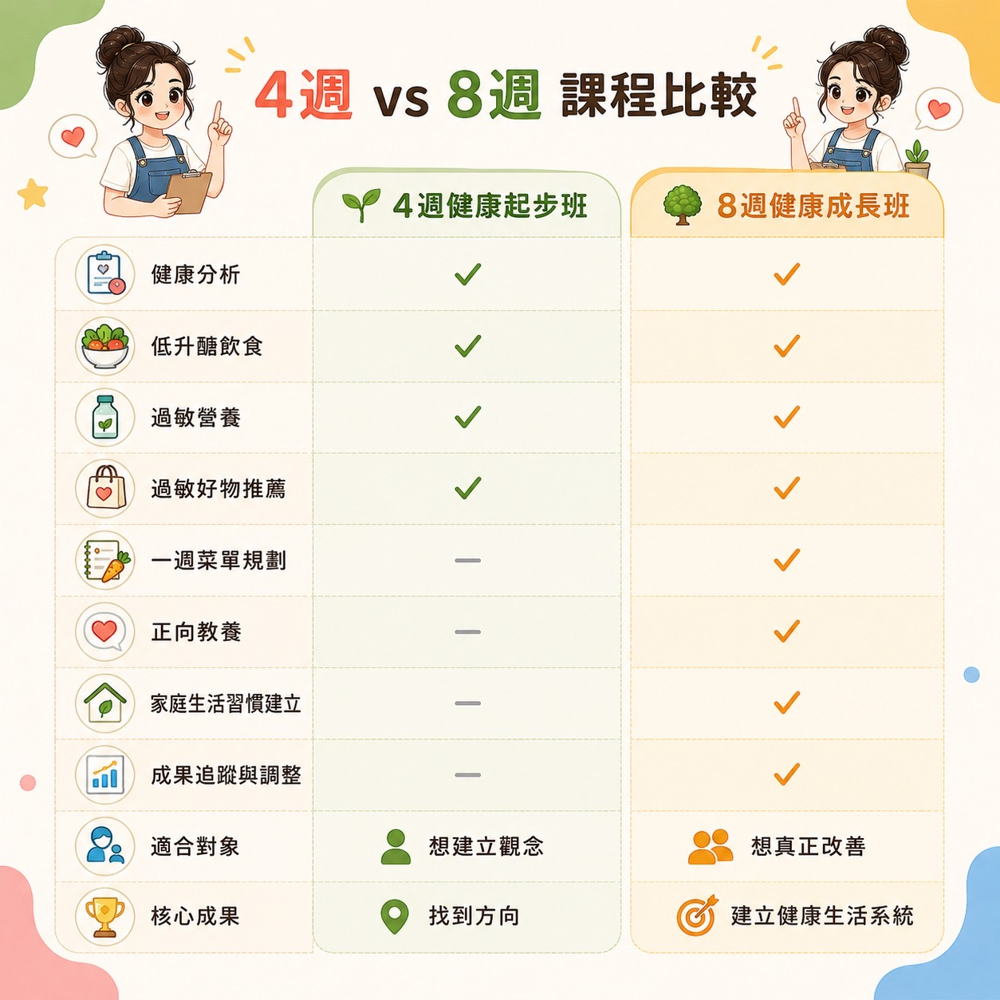
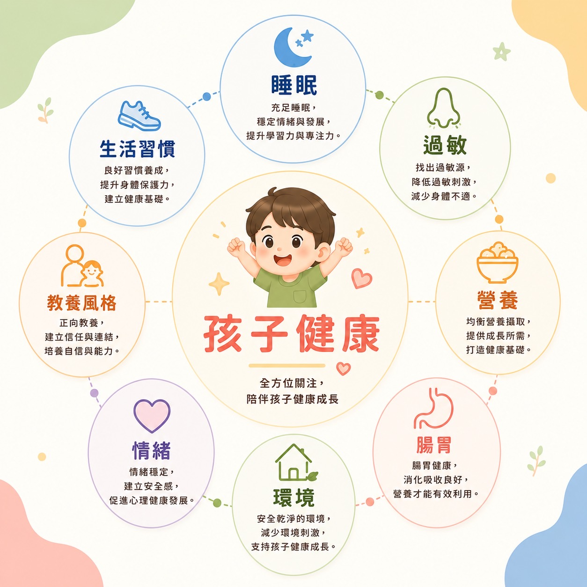
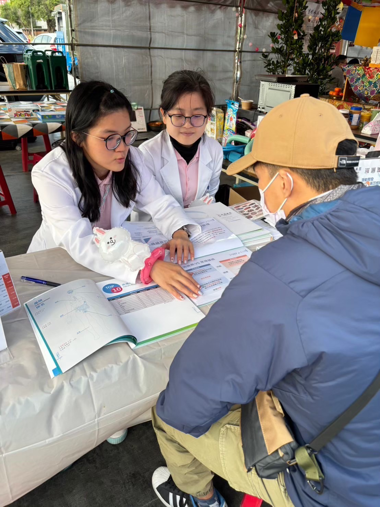

結合 20 年幼教經驗 × 科學健康檢測 × 生活型態分析
陪你一起找到孩子真正需要改善的方向。
林溱桐｜牛牛老蘇
天領健康教育 共同創辦人・美國協會PDA正向教養講師
很多時候，真正需要調整的不只是症狀，而是孩子每天的生活與身體狀態。

從預約到陪伴，一步一步走，清楚安心。





天領健康教育致力於推廣健康教育與預防保健，
透過專業團隊、健康檢測及健康管理，
協助家庭建立更健康的生活方式。
「以前每天早上一起床就是打噴嚏、揉鼻子，晚上也常因為鼻塞睡不好，全家都很擔心。諮詢後才發現，除了過敏本身，生活習慣、睡眠和飲食也有很多可以調整的地方。現在孩子比較舒服，晚上睡得也比較安穩，我們終於知道可以從哪些地方開始改善，而不是一直猜原因。」
「孩子幾乎每天喊肚子不舒服，吃完飯肚子就鼓鼓的，常常放屁、胃口也不好。我們原本不知道該怎麼辦，透過諮詢後重新檢視飲食和生活習慣，也了解哪些地方值得再進一步觀察。最重要的是，終於有一個清楚的方向，不再只是一直換方法。」
「孩子幾天才上一次廁所，每次都哭著不敢大便，我們真的很心疼。諮詢時不只是討論排便，也一起看了飲食、水分、作息和活動量，讓我們知道原來很多細節都會影響孩子。慢慢調整後，全家對照顧孩子也更有信心了。」
「每次看到孩子抓到流血，我真的很心疼，也一直懷疑是不是自己哪裡沒照顧好。透過諮詢後，我們不再只是把焦點放在皮膚，而是重新了解孩子整體的生活型態、飲食與日常習慣。最大的收穫不是馬上有答案，而是終於知道可以一步一步找到適合孩子的方向。」